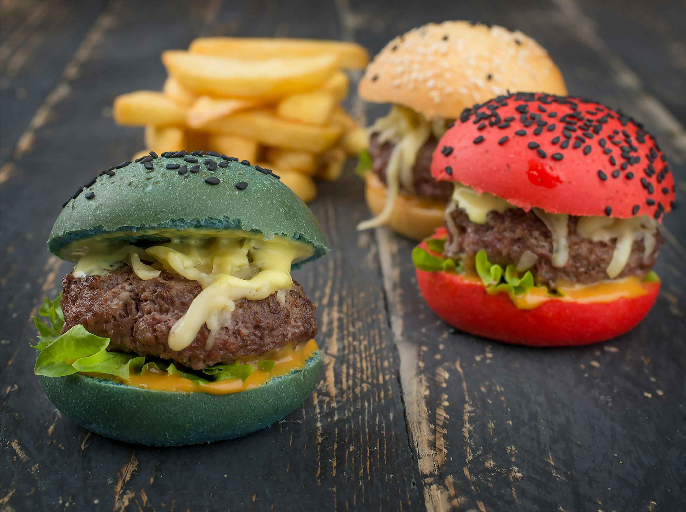

Home
Hamburger recipe

Description
Delicious and warm hamburger
Ingredients
1 ½ pounds lean ground beef
½ onion, finely chopped
½ cup shredded Colby Jack or Cheddar cheese
1 large egg
1 (1 ounce) envelope dry onion soup mix
1 clove garlic, minced
1 tablespoon garlic powder
1 teaspoon soy sauce
1 teaspoon Worcestershire sauce
1 teaspoon dried parsley
1 teaspoon dried basil
1 teaspoon dried oregano
½ teaspoon crushed dried rosemary
pinch of salt and pepper or to taste
Steps
Gather all ingredients. Preheat an outdoor grill for high heat and lightly oil the grate.
Meanwhile, combine ground beef, onion, cheese, egg, onion soup mix, minced garlic, garlic powder, soy sauce, Worcestershire sauce, parsley, basil, oregano, rosemary, salt, and pepper in a large bowl.
Use your hands to form the mixture into 4 patties.
Cook patties on the preheated grill until no longer pink in the center and the juices run clear, about 4 to 5 minutes per side.
An instant-read thermometer inserted into the center should read at least 165 degrees F (74 degrees C).